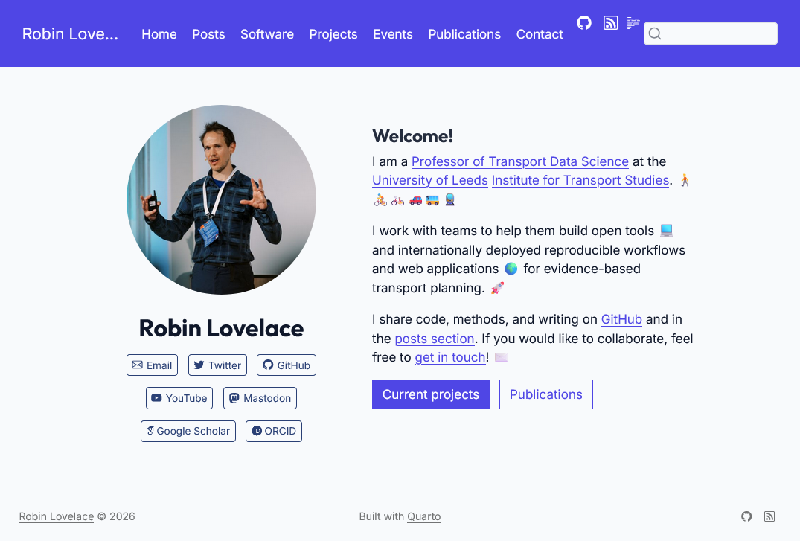

Migration to Quarto
A practical migration and deployment update
Following in the footsteps of reproducible research rolemodels including Nicola Rennie, Andrew Heiss and Jakub Nowosad, I’ve finally migrated my website to Quarto!
Some brief notes on the process follow, it’s worth it but there are some gotchas and things to consider.

Why migrate? Wowchemy and HugoBlox closed ecosystems
I explored options including migrating from Wowchemy to HugoBlox. If you search for Wowchemy on GitHub today, there are no public repositories under github.com/wowchemy. The project activity has moved under the HugoBlox organisation: github.com/HugoBlox.
So one path was to stay in the Hugo ecosystem and migrate templates and content there. The other path was to simplify and move to Quarto for content-first publishing and easier long-term maintenance.
I went with Quarto. Despite its cons of being slower to generate html (quarto preview can take minutes for large sites, something the team is working on in the currently-experimental quarto-dev/q2 repository) and being less flexible in some ways than Hugo, Quarto is unbeatable for scientific and reproducible content.
Converting content
For anyone sitting on years of posts, events, and publication metadata, this is the kind of utility that turns a risky migration into a manageable one.
Another useful piece of the Quarto ecosystem is the Academicons extension workflow documented here: https://rmflight.github.io/posts/2022-12-03-using-academicons-in-your-quarto-blog/. Academicons are great for academic profile links (ORCID, Google Scholar and similar), but the experience is still more extension-oriented and less integrated than the tightly packaged academic site features available in HugoBlox. That is one reason I think Quarto could benefit from more high-level, Wowchemy/HugoBlox-style extensions for academic websites.
Legacy site archive
The old version of my site remains online here:
That gives a stable reference point while the new stack evolves.
Domain and GitHub Pages setup
With help from Jakub Nowosad, I configured my domain so GitHub Pages can serve from the apex domain setup. The practical result is that repositories with gh-pages outputs appear automatically under robinlovelace.net.
For example:
- New URL: https://robinlovelace.net/rs5c/
- Previous URL: https://robinlovelace.github.io/rs5c/
The old GitHub-hosted URL now redirects, so links continue to work while the canonical home is on robinlovelace.net.
Next steps
I’m still looking into how to better automate things. I’ve set-up GitHub Actions to create Netlify previews on each pull request, and am looking to set-up a regular workflow to run every month or so to update citations. Overall, I suggest keeping it fairly simple, with themes and extensions that are well-supported and maintained.
I’ve also found that nothing quite beats the out-of-the-box Publications page in HugoBlox for managing publications, so I’m looking into ways to automate the creation of a similar page in Quarto.
Check out the source code of my newly updated website if interested in any case and feel free to reach out, e.g. using the newly set-up Giscus comments system on this site. Hoping this new set-up will encourage me to blog more. Watch this space!